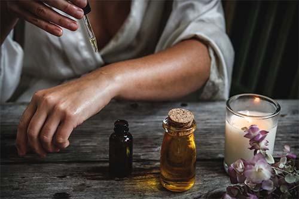

Les huiles essentielles
Les plantes sont dotées de propriétés et de bienfaits fabuleux pour notre santé et notre bien-être. Les huiles essentielles, extraits naturels du végétal sont très souvent réutilisables pour différents maux.
Le monde végétal se diversifie sous une multitude de formes. Nous allons principalement traiter les huiles essentielles dans cette partie, toutefois vous avez également les huiles et beurres végétaux, les hydrolats, macérât, l’argile et bien d’autres… Les plantes sont un incroyable moyen de se guérir.
Le lexique utilisé
Dans les différentes recettes que je vous partagerai veuillez retenir deux choses :
Huile essentielle (HE) Huile végétale (HV)
Précautions d'emploi
Les huiles essentielles (HE) ont un actif très puissant, il faut donc les utiliser avec précaution.
Hormis l’huile d’arbre à thé (Tee Tree) je n’applique AUCUNE huile essentielle directement sur ma peau pour éviter de me brûler.
Je mélange systématiquement des HE avec des HV.
Les HE ne doivent pas rentrer en contact des yeux, des oreilles ou toute autre partie sensible de votre corps.
Ce site internet a pour but de partager ma connaissance et mon vécu des HE. Je ne suis en aucun cas médecin, aromatologue, pharmacienne ou tout autre statue dans la médecine.

Les huiles essentielles indispensables
Il est souvent difficile de s'y retrouver quand on débute avec les huiles essentielles. En effet, un nombre incalculable d'huiles existe dans le commerce. C'est pourquoi je vais vous partager les huiles que j'utilise et leur bienfait.
L’arbre à thé : (Tea tree) :
Santé : Antibactérien majeur et antiviral, il aide à lutter contre toutes sortes d’infections. Beauté : : Soin des peaux à tendance acnéique
Ylang ylang :
Santé : Antispasmodique, calmant respiratoire et cardiaque, hypotensive, antiarythmique . Relaxation, antistress, apaisante et équilibrante sur le système nerveux, sédative
Pin sylvestre :
Pour purifier l’air, faciliter la respiration ou lutter contre la fatigue. Aide contre les bronchites, sinusite, toux, laryngite
Menthe poivrée :
Migraine , céphalée : une goutte pour masser sur les tempes
Mandarine :
Antispasmodique, stimulant gastrique et hépatique, tonique digestifMes remèdes
Les migraines :
Sujette aux migraines depuis longtemps j’ai enfin trouvé un remède que j’utilise depuis 2 ans nécessitant aucun anti-douleur supplémentaire.• He menthe poivrée 4ml
• He romarin à camphre 3ml
• He gaulthérie couchée 3ml
Roll-on 10 ml à étaler sur les tempes en cas de douleur Effet : cela chauffe comme le baume du tigre
Le stress :
• HE Petitgrain 1 ml
• HE Ylang-Ylang 1 ml
• HE Mandarine 2 ml
Utilisation : Appliquez ce mélange sur le plexus solaire, plusieurs fois par jour, pendant 3 semaines
Ne pas s'exposer au soleil après application de cette préparationLes cystites :
• HE Girofle : 3 gouttes
• HE Gaulthérie : 2 gouttes
• HE Petit grain bigarade : 5 gouttes
• HV Calophylle : 2 ml
• HV Macadamia : 2 ml>Préparation : Massez le bas-ventre avec ce mélange plusieurs fois par jour, le temps de la douleur.
Les ballonements :
• HE Basilic exotique : 10 gouttes
• HV Macadamia : 15 ml
Préparation : Appliquez sur le ventre.